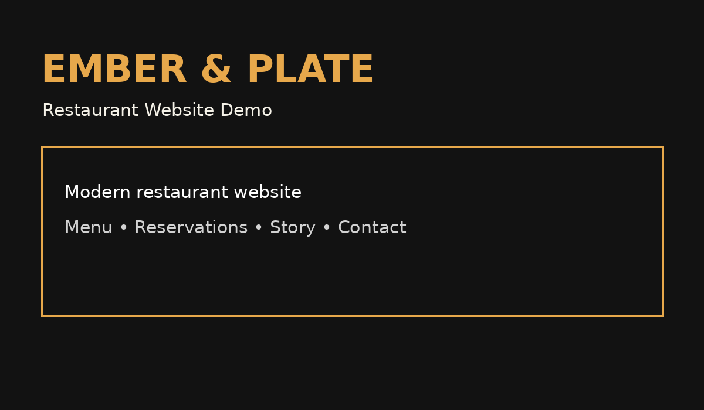

01 / WEBSITE DEMO
Website Design
A visual preview of my website work. I build responsive sites to present a business clearly on desktop and mobile.
Explore my work →One Creator • Many Digital Solutions
Websites • E-Commerce • Video Editing
I work independently with individuals and small businesses in Malaysia, turning ideas into practical digital projects.

A visual preview of my website work. I build responsive sites to present a business clearly on desktop and mobile.
Explore my work →
Peanut Lulu is an example of a friendly small-business website concept, with visual content tailored to the shop.
Explore my work →
Practical help with online-shop presentation, product visuals and a clearer customer journey.
Discuss your store →
Editing and visual storytelling for social videos, promotional content and creative projects. Watch examples on my My Work page.
Watch video projects →